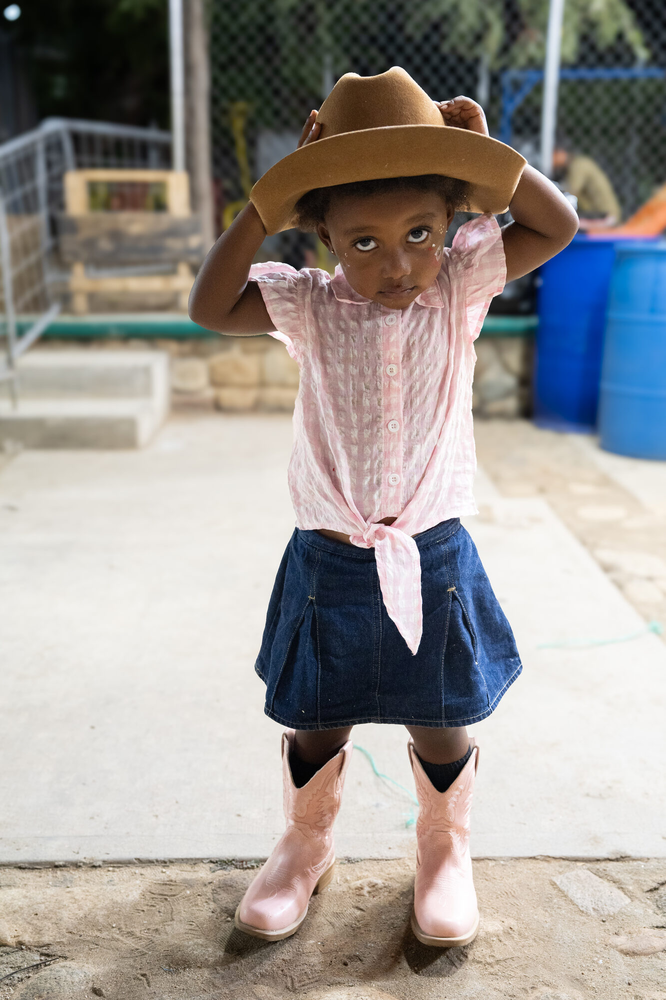

Paisajes, observados en silencio.
Soy Shem, fotógrafo de paisaje y naturaleza que trabaja en todo el Pacífico Noroeste.
Cuadro reciente
Retrato en el camino
Una foto del trabajo de viajes, tal como fue tomada — vertical y sin recortar. La serie completa está en la página Tierra.
Ver el trabajo en tierra →
Tienda
Impresiones firmadas y de edición limitada de una selección de mi trabajo de paisaje, con envío a todo el mundo.
PróximamenteDiario
Notas e historias desde el terreno — la más reciente es de una semana en la costa de Oregón.
PróximamenteReservar una Sesión
Sesiones de retrato y locación por todo el Pacífico Noroeste, de primavera a otoño.
Próximamente